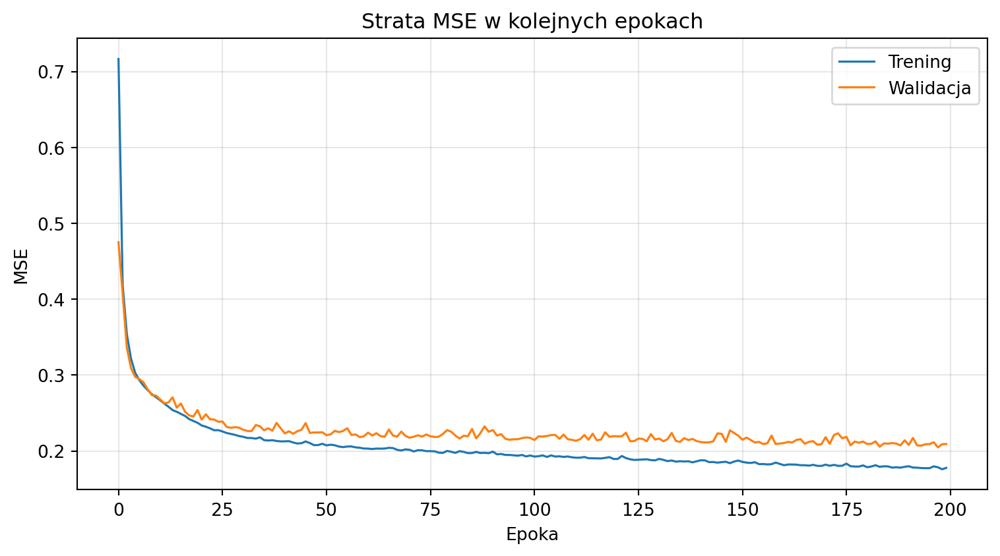
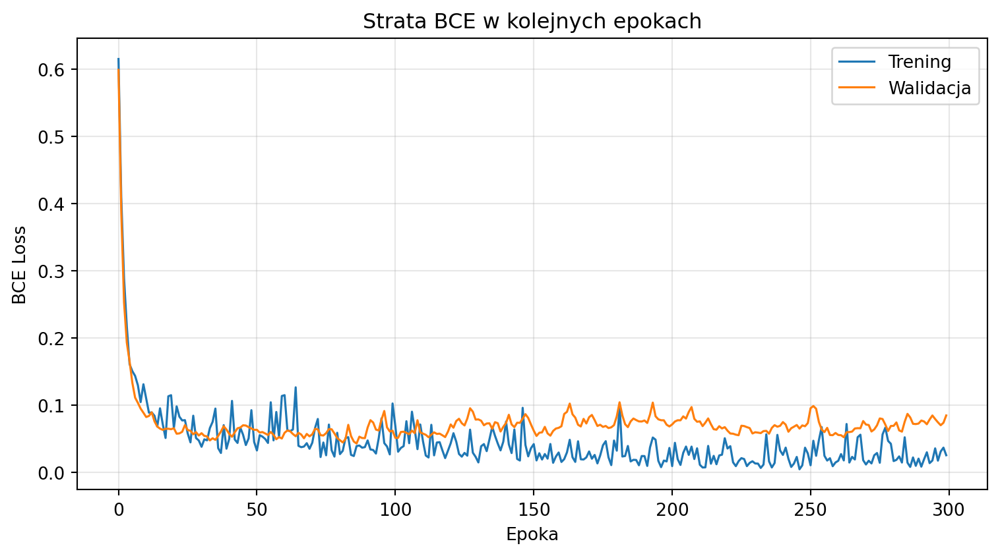

W tym rozdziale przedstawimy sieci neuronowe – rodzinę modeli będących fundamentem współczesnego uczenia głębokiego. Skupimy się na zrozumieniu podstawowych elementów budowy sieci oraz mechanizmu ich uczenia. Analizy wykonamy w języku Python z użyciem biblioteki PyTorch.
Sieć neuronowa to złożenie wielu prostych jednostek – neuronów – które wspólnie są w stanie aproksymować dowolnie złożone zależności między zmiennymi. W odróżnieniu od modeli liniowych czy pojedynczych drzew decyzyjnych, sieci neuronowe uczą się własnej reprezentacji cech w kolejnych warstwach.
AdnotacjaCo będzie wynikiem tej analizy?
Na końcu będziemy umieli opisać budowę sieci neuronowej, wyjaśnić przepływ informacji w przód, działanie algorytmu wstecznej propagacji oraz zbudować w PyTorch modele do regresji i klasyfikacji.
Formułowanie celu i problemów badawczych
Cel dydaktyczny
Chcemy zrozumieć sieć neuronową jako elastyczne narzędzie predykcyjne, które znajduje zależności w danych bez ręcznego definiowania postaci funkcyjnej. Model może przewidywać zarówno wartości liczbowe (regresja), jak i klasy obserwacji (klasyfikacja).
WażneJasne określenie celu
Cel wykładu: przedstawić architekturę sieci neuronowych, wyjaśnić algorytm uczenia metodą wstecznej propagacji oraz zademonstrować dwa praktyczne zastosowania w PyTorch.
Problemy badawcze
Interesuje nas odpowiedź na następujące pytania:
Z czego składa się pojedynczy neuron i cała warstwa sieci?
Jaką rolę pełnią funkcje aktywacji i czym różnią się najczęściej stosowane?
Jak definiuje się funkcję celu i dlaczego jej wybór zależy od rodzaju problemu?
Jak działa algorytm wstecznej propagacji ze stochastycznym spadkiem wzdłuż gradientu (SGD)?
Jak zbudować sieć neuronową do regresji i jak ocenić jej jakość?
Jak zbudować sieć neuronową do klasyfikacji i jak interpretować jej wyniki?
Podstawowe elementy sieci neuronowych
Neuron – podstawowa jednostka obliczeniowa
Pojedynczy neuron (zwany też perceptronem) wykonuje dwie operacje:
Sumowanie ważone – oblicza sumę iloczynów wejść \(x_1, x_2, \dots, x_n\) i odpowiadających im wag\(w_1, w_2, \dots, w_n\) oraz dodaje bias\(b\):
\[
z = w_1 x_1 + w_2 x_2 + \dots + w_n x_n + b = \mathbf{w}^T \mathbf{x} + b.
\]
Funkcja aktywacji – przekształca wynik sumowania \(z\) w wartość wyjściową neuronu:
\[
a = f(z).
\]
Schematycznie: dane wejściowe \((x_1, \dots, x_n)\) są mnożone przez wagi \((w_1, \dots, w_n)\), sumowane z biasem \(b\), a wynik przechodzi przez funkcję aktywacji \(f\), dając wyjście \(a\).
W praktyce neurony są grupowane w warstwy. Warstwa to zbiór neuronów, z których każdy otrzymuje te same wejścia, ale ma własny zestaw wag i biasów. Wyjście całej warstwy można zapisać macierzowo:
gdzie \(\mathbf{W}\) jest macierzą wag, \(\mathbf{x}\) wektorem wejść, a \(\mathbf{b}\) wektorem biasów.
Propagacja w przód
Propagacja w przód (forward pass) to proces obliczania predykcji sieci dla danej obserwacji. Sygnał przepływa od warstwy wejściowej, przez warstwy ukryte, aż do warstwy wyjściowej:
Warstwa wejściowa przyjmuje wektor cech \(\mathbf{x}\).
Warstwa wyjściowa daje końcową predykcję \(\hat{y}\).
Wielowarstwowość jest kluczowa: pojedyncza warstwa ukryta pozwala sieci być uniwersalnym aproksymatorem, a kolejne warstwy umożliwiają uczenie się hierarchicznych reprezentacji cech.
Funkcje aktywacji
Funkcja aktywacji wprowadza nieliniowość. Bez niej cała sieć – niezależnie od liczby warstw – byłaby równoważna pojedynczej transformacji liniowej.
Najczęściej stosowane funkcje aktywacji:
Funkcja
Wzór
Zakres
Zastosowanie
ReLU
\(f(z) = \max(0, z)\)
\([0, \infty)\)
Warstwy ukryte
Sigmoid
\(f(z) = \frac{1}{1 + e^{-z}}\)
\((0, 1)\)
Wyjście dla klasyfikacji binarnej
Tanh
\(f(z) = \frac{e^z - e^{-z}}{e^z + e^{-z}}\)
\((-1, 1)\)
Warstwy ukryte (alternatywa ReLU)
Softmax
\(f(z_i) = \frac{e^{z_i}}{\sum_j e^{z_j}}\)
\((0, 1)\), suma = 1
Wyjście dla klasyfikacji wieloklasowej
WskazówkaDlaczego ReLU?
ReLU jest domyślnym wyborem dla warstw ukrytych, ponieważ nie cierpi na problem zanikającego gradientu (w przeciwieństwie do sigmoida i tanh), jest szybkie obliczeniowo i zwykle prowadzi do lepszej zbieżności treningu.
Kształty najczęściej stosowanych funkcji aktywacji
Funkcje celu
Funkcja celu (straty, loss function) mierzy, jak bardzo predykcje modelu różnią się od prawdziwych wartości. Wybór funkcji celu zależy od rodzaju problemu:
W PyTorch nn.BCEWithLogitsLoss oczekuje surowych logitów (przed sigmoidem), podobnie nn.CrossEntropyLoss oczekuje logitów (przed softmaxem). Jest to wydajniejsze numerycznie niż ręczne stosowanie aktywacji przed funkcją straty.
Uczenie sieci: wsteczna propagacja i SGD
Dlaczego potrzebujemy algorytmu uczenia?
Parametry sieci (wagi i biasy) nie są znane z góry. Musimy je dobrać tak, aby minimalizować funkcję celu na danych treningowych. Ponieważ sieć może mieć tysiące lub miliony parametrów, potrzebujemy wydajnego algorytmu optymalizacji.
Wsteczna propagacja błędu
Wsteczna propagacja (backpropagation) to algorytm efektywnego obliczania gradientu funkcji celu względem wszystkich parametrów sieci. Opiera się na regule łańcuchowej (chain rule) z rachunku różniczkowego.
Intuicja działania algorytmu:
Wykonaj propagację w przód – oblicz predykcję \(\hat{y}\) i wartość straty \(\mathcal{L}\).
Oblicz gradient straty względem wyjścia sieci: \(\frac{\partial \mathcal{L}}{\partial \hat{y}}\).
Propaguj gradient wstecz przez kolejne warstwy, korzystając z reguły łańcuchowej: \[
\frac{\partial \mathcal{L}}{\partial \mathbf{W}^{(l)}} = \frac{\partial \mathcal{L}}{\partial \mathbf{a}^{(l)}} \cdot \frac{\partial \mathbf{a}^{(l)}}{\partial \mathbf{z}^{(l)}} \cdot \frac{\partial \mathbf{z}^{(l)}}{\partial \mathbf{W}^{(l)}}.
\]
Zaktualizuj parametry, przesuwając je w kierunku przeciwnym do gradientu.
W PyTorch cały ten proces jest zautomatyzowany przez moduł autograd. Wywołanie .backward() na wartości straty uruchamia obliczenie gradientów dla wszystkich parametrów, które mają atrybut requires_grad=True.
Stochastic Gradient Descent (SGD)
Stochastyczny spadek wzdłuż gradientu to algorytm aktualizacji parametrów:
Ilustracja SGD: optymalizacja prostej funkcji dwóch zmiennych
Powyższa ilustracja pokazuje, jak SGD krok po kroku przesuwa parametry w kierunku minimum funkcji Rosenbrocka – klasycznego problemu testowego dla algorytmów optymalizacyjnych.
WskazówkaMini-batch, learning rate i epoki
Batch size: 32–128 dla danych tabularycznych. Większy batch daje stabilniejszy, ale droższy krok.
Learning rate: typowo 0.1–0.001 dla SGD. Zbyt duży powoduje oscylacje, zbyt mały – powolne uczenie.
Liczba epok: należy monitorować stratę na zbiorze walidacyjnym i zatrzymać trening, gdy przestaje spadać (early stopping).
Przykład 1: regresja – predykcja cen nieruchomości w Kalifornii
Cel przykładu
W pierwszym przykładzie zbudujemy sieć neuronową do przewidywania mediany wartości domów w kalifornijskich dzielnicach. Wykorzystamy zbiór California Housing dostępny w bibliotece scikit-learn.
WażneCel predykcyjny
Przewidywanie mediany wartości domu (w setkach tysięcy dolarów) na podstawie 8 cech demograficzno-geograficznych dzielnicy.
Opis danych
Zbiór California Housing zawiera 20 640 obserwacji, co czyni go dobrze dopasowanym do uczenia sieci neuronowych. Każda obserwacja opisuje jedną dzielnicę (tzw. block group) za pomocą 8 cech:
MedInc – mediana dochodu w dzielnicy,
HouseAge – mediana wieku domów,
AveRooms – średnia liczba pokoi,
AveBedrms – średnia liczba sypialni,
Population – populacja dzielnicy,
AveOccup – średnia liczba mieszkańców na dom,
Latitude, Longitude – współrzędne geograficzne.
Zmienna docelowa to mediana wartości domu wyrażona w setkach tysięcy dolarów (np. 2.5 oznacza 250 000 USD).
Dzięki dużej liczbie obserwacji możemy pozwolić sobie na sieć MLP o trzech warstwach:
Warstwa wejściowa: 8 neuronów (tyle, ile cech)
Warstwa ukryta 1: 64 neurony, aktywacja ReLU
Warstwa ukryta 2: 32 neurony, aktywacja ReLU
Warstwa wyjściowa: 1 neuron, bez aktywacji
Dla danych tabularycznych celowo rezygnujemy z BatchNorm i Dropout – przy stabilnym optymalizatorze (Adam) prosta architektura Linear → ReLU często daje najlepszy stosunek jakości do stabilności treningu.
Funkcja celu: MSELoss. Optymalizator: Adam z learning rate = 0.001 oraz weight_decay = 1e-4 (regularyzacja L2).
Trening prowadzimy za pomocą mini-batch SGD z DataLoader (batch size = 256). W każdej epoce monitorujemy stratę na zbiorze treningowym i walidacyjnym oraz zapamiętujemy najlepszy stan modelu według straty walidacyjnej. Zbiór testowy pozostaje nietknięty aż do końcowej oceny.
plt.figure(figsize=(8, 4.5))plt.plot(train_losses, label="Trening", linewidth=1.2)plt.plot(val_losses, label="Walidacja", linewidth=1.2)plt.xlabel("Epoka")plt.ylabel("MSE")plt.title("Strata MSE w kolejnych epokach")plt.legend()plt.grid(alpha=0.3)plt.tight_layout()plt.show()

Krzywa straty MSE podczas treningu sieci regresyjnej
Adam stabilnie optymalizuje sieć – krzywa walidacyjna opada płynnie wraz z treningową. Przywracamy najlepszy stan modelu według walidacji, aby uniknąć sytuacji, w której ostatnia epoka przypadkowo wypadła gorzej.
Ocena modelu
Po zakończeniu treningu oceniamy model na wszystkich trzech zbiorach. Dopiero teraz używamy zbioru testowego.
Wartości rzeczywiste vs przewidywane – zbiór testowy
Punkty układają się wzdłuż przekątnej, a wartości \(R^2\) na trzech zbiorach są spójne – model nie przeucza się i dobrze generalizuje na nowe dzielnice.
Przykład 2: klasyfikacja – diagnostyka raka piersi
Cel przykładu
W drugim przykładzie zbudujemy sieć neuronową do klasyfikacji binarnej – odróżniania guzów złośliwych od łagodnych na podstawie cech morfologicznych jąder komórkowych. Wykorzystamy zbiór breast_cancer z scikit-learn.
WażneCel klasyfikacyjny
Przewidywanie, czy guz jest złośliwy (1) czy łagodny (0), na podstawie 30 cech opisujących właściwości geometryczne jąder komórkowych.
Opis danych
Zbiór breast_cancer (Wisconsin Diagnostic Breast Cancer) zawiera 569 obserwacji. Każda opisuje jedno badanie cytologiczne za pomocą 30 cech liczbowych (m.in. promień, tekstura, obwód, pole powierzchni, gładkość jąder komórkowych). Zmienna docelowa jest binarna: 0 – guz łagodny, 1 – guz złośliwy.
Warstwa wyjściowa: 1 neuron, bez aktywacji – zwraca logit
Dropout losowo wyłącza 30% neuronów podczas treningu, co zmusza sieć do budowania nadmiarowych, bardziej odpornych reprezentacji i przeciwdziała przeuczeniu.
Funkcja celu: BCEWithLogitsLoss (binarna entropia krzyżowa z wbudowanym sigmoidem). Optymalizator: SGD z learning rate = 0.01 oraz momentum = 0.9.
Sigmoid nakładamy dopiero podczas ewaluacji, aby uzyskać prawdopodobieństwa (por. uwagę o BCEWithLogitsLoss wyżej).
plt.figure(figsize=(8, 4.5))plt.plot(train_losses_cls, label="Trening", linewidth=1.2)plt.plot(val_losses_cls, label="Walidacja", linewidth=1.2)plt.xlabel("Epoka")plt.ylabel("BCE Loss")plt.title("Strata BCE w kolejnych epokach")plt.legend()plt.grid(alpha=0.3)plt.tight_layout()plt.show()

Krzywa straty BCE podczas treningu sieci klasyfikacyjnej
Strata na obu zbiorach systematycznie spada i nie rozbiega się – model generalizuje poprawnie. Dropout i BatchNorm pomagają utrzymać stabilny trening mimo głębszej architektury.
Model osiąga wysoką dokładność (powyżej 95%) nawet przy głębszej architekturze. Zbliżone wartości metryk dla zbioru treningowego, walidacyjnego i testowego świadczą o braku przeuczenia. Macierz pomyłek pokazuje pojedyncze pomyłki – sieć skutecznie oddziela guzy złośliwe od łagodnych.
Porównanie regresji i klasyfikacji w sieciach neuronowych
Aspekt
Regresja
Klasyfikacja binarna
Warstwa wyjściowa
1 neuron, bez aktywacji
1 neuron, bez aktywacji (logit)
Funkcja straty
MSELoss
BCEWithLogitsLoss
Metryka
RMSE, \(R^2\), MAE
Accuracy, precyzja, czułość, F1
Interpretacja wyniku
Wartość liczbowa
Prawdopodobieństwo klasy pozytywnej
Próg decyzyjny
Nie dotyczy
Domyślnie 0.5
AdnotacjaKlasyfikacja wieloklasowa
Gdy mamy więcej niż dwie klasy, warstwa wyjściowa ma tyle neuronów, ile jest klas, a funkcją straty jest CrossEntropyLoss. Nie stosujemy wtedy sigmoida – CrossEntropyLoss wewnętrznie używa softmaxa.
Najważniejsze zalety i ograniczenia sieci neuronowych
Zalety
Sieci neuronowe potrafią modelować bardzo złożone, nieliniowe zależności bez ręcznego definiowania interakcji między zmiennymi czy transformacji cech. Dzięki warstwom ukrytym uczą się hierarchicznych reprezentacji danych. Ta sama architektura (po zmianie ostatniej warstwy i funkcji straty) może być użyta zarówno do regresji, jak i klasyfikacji.
Ograniczenia
Sieci neuronowe wymagają starannego przygotowania danych (standaryzacja, usuwanie braków). Są podatne na przeuczenie, szczególnie gdy danych jest mało, a parametrów dużo. Wyniki zależą od wielu hiperparametrów: liczby warstw, liczby neuronów, learning rate, batch size, liczby epok. W przeciwieństwie do regresji liniowej czy drzewa decyzyjnego, wagi sieci nie mają prostej interpretacji.
OstrzeżenieTypowe błędy praktyczne
Brak skalowania danych – sieć będzie się uczyć wolno lub wcale.
Zbyt duży learning rate – strata oscyluje i nie spada.
Zbyt mało danych, zbyt dużo parametrów – model zapamiętuje zbiór treningowy, ale nie generalizuje.
Niewłaściwa funkcja straty – MSELoss do klasyfikacji nie działa poprawnie; użyj BCEWithLogitsLoss lub CrossEntropyLoss.
Wnioski
Sieci neuronowe są uniwersalnym narzędziem predykcyjnym, którego podstawą jest koncepcja neuronu – jednostki obliczającej ważoną sumę wejść i przepuszczającej wynik przez nieliniową funkcję aktywacji. Neurony zorganizowane w warstwy tworzą sieć, która w procesie propagacji w przód generuje predykcję, a w procesie wstecznej propagacji – uczy się na podstawie błędu.
Algorytm stochastycznego spadku wzdłuż gradientu (SGD) w połączeniu z mini-batchami stanowi praktyczny mechanizm optymalizacji parametrów sieci. Dzięki automatycznemu różniczkowaniu w PyTorch cały proces sprowadza się do zdefiniowania modelu, funkcji celu i pętli treningowej.
W praktyce najważniejsze decyzje to: wybór architektury (liczba warstw i neuronów), funkcji aktywacji, funkcji celu, optymalizatora, właściwy podział danych na zbiory treningowy, walidacyjny i testowy oraz odpowiednie przygotowanie danych (standaryzacja).